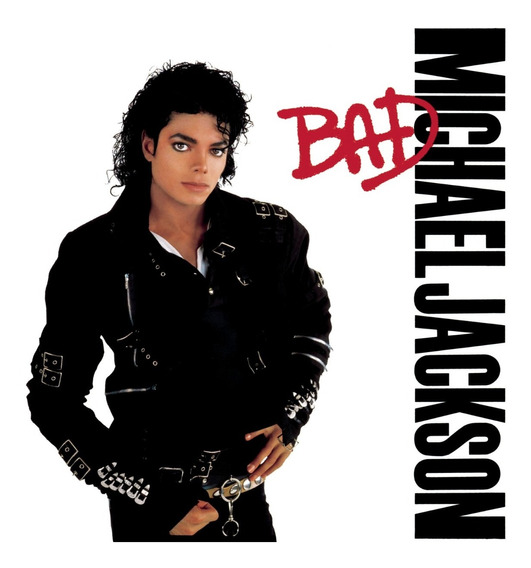

DISCOGRAFIA
“Ben” (1972)
- 1- Ben
- 2- Greatest Show On Earth
- 3- People Make The World Go 'Round
- 4- We've Got A Good Thing Going
- 5- Everybody's Somebody's Fool
- 6- My Girl
- 7- What Goes Around Comes Around
- 8- In Our Small Way
- 9- Shoo-Be-Doo-Be-Doo-Da-Day
- 10- You Can Cry On My Shoulder
“Music And Me” (1973)
- 1- Rockin' Robin
- 2- Johnny Raven
- 3- Shoo-Be-Doo-Be-Doo-Da-Day
- 4- Happy (Love Theme From "Lady Sings The Blues)
- 5- Too Young
- 6- Up Again
- 7- With A Child's Heart
- 8- Ain't No Sunshine
- 9- Euphoria
- 10- Morning Glow
- 11- Music And Me
- 12- All The Things You Are, Are Mine
- 13 -Cinderella Stay Awhile
- 14- We've Got Forever
“Forever Michael” (1975)
- 1- We're Almost There
- 2- Take Me Back
- 3- One Day In Your Life
- 4- Cinderella Stay Awhile
- 5- We've Got Forever
- 6- Just A Little Bit Of You
- 7- You Are There
- 8- Dapper Dan
- 9- Dear Michael
- 10- I'll Come Home To You
“Off The Wall” (1979)
- 1-Don't Stop 'Til You Get Enough
- 2- Rock With You
- 3- Working Day And Night
- 4- Get On The Floor
- 5- Off The Wall
- 6- Girlfriend
- 7- She's Out Of My Life
- 8- I Can't Help It
- 9- It's The Falling In Love
- 10- Burn This Disco Out
“Thriller” (1982)
- 1-Wanna Be Startin' Somethin'
- 2- Baby Be Mine
- 3- The Girl Is Mine
- 4- Thriller
- 5- Beat It
- 6- Billie Jean
- 7- Human Nature
- 8- P.Y.T. (Pretty Young Thing)t
- 9- The Lady In My Life

“Bad” (1987)
- 1-Bad
- 2- The Way You Make Me Feel
- 3- Speed Demon
- 4- Liberian Girl
- 5- Just Good Friends
- 6- Another Part Of Me
- 7- Man In The Mirror
- 8- I Just Can't Stop Loving You
- 9- Dirty Diana
- 10- Smooth Criminal
“Dangerous” (1991)
- 1- Jam
- 2- Why You Wanna Trip On Me
- 3- In The Closet
- 4- She Drives Me Wild
- 5- Remember The Time
- 6- Can't Let Her Get Away
- 7- Heal The World
- 8- Black Or White
- 9- Who Is It
- 10- Give In To Me
- 11- Will You Be There
- 12- Keep The Faith
- 13- Gone Too Soon
“History” (1995)
CD-1
- 1-Billie Jean
- 2- The Way You Make Me Feele
- 3- Black Or White
- 4- Rock With You
- 5- She's Out Of My Life
- 6- Bad
- 7- I Just Can't Stop Loving You
- 8- Man In The Mirror
- 9- Thriller
- 10- Beat It
- 11- The Girl Is Mine
- 12- Remember The Time
- 13- Don't Stop 'Til You Get Enoughn
- 14- Wanna Be Startin' Somethin'
- 15- Heal The World
CD-2
- 1-Scream
- 2- They Don't Care About Us
- 3- Stranger In Moscow
- 4- This Time Around
- 5- Earth Song
- 6- D.S.
- 7- Money
- 8- Come Togetherr
- 9- You Are Not Alone
- 10- Childhood
- 11- Tabloid Junkie
- 12- 2 Bad
- 13- HIStory
- 14- Little Susie
- 15- Smile
“Blood On The Dance Floor” (1997)
- 1- Blood on the Dance Floor
- 2- Morphine
- 3- Superfly Sister
- 4- Ghosts
- 5- Is It Scary
- 6- Scream Louder (Flyte Tyme Remix)
- 7- Money (Fire Island Radio Edit)
- 8- 2 Bad (Refugee Camp Mix)
- 9- Stranger in Moscow (Tee's In-House Club Mix)
- 10- This Time Around (D.M. Radio Mix)
- 11- Earth Song (Hani's Club Experience)
- 12- You Are Not Alone (Classic Club Mix)
- 13- HIStory (Tony Moran's HIStory Lesson)
“Invincible” (2001)
- 1- Unbreakable
- 2- Heartbreaker
- 3- Invincible
- 4- Break Of Dawn
- 5- Heaven Can Wait
- 6- You Rock My World
- 7- Butterflies
- 8- Speechless
- 9- 2000 Watts
- 10- You Are My Life
- 11- Privacy
- 12- Don't Walk Away
- 13- Cry
- 14- The Lost Children
- 15- Whatever Happens
- 16- Threatened
“Michael” (2010) - Póstumo
- 1- Hold My Hand
- 2- Hollywood Tonight
- 3- (I Like) The Way You Love Me
- 4- Best of Joy
- 5- (I Can't Make It) Another Day
- 6- Behind the Mask
- 7- Much Too Soon
“Xscape” (2014) - Póstumo
- 1- Love Never Felt So Good
- 2- Chicago
- 3- Loving You
- 4- A Place With No Name
- 5- Slave to the Rhythm
- 6- Do You Know Where Your Children Ar
- 7- Blue Gangsta
- 8- Xscape